1. 사업관리 로드맵
사업관리(프로젝트 관리)는 ISO 21500 / PMBOK을 기반으로 출제된다. 전체는 통합·범위·일정·원가·품질·자원(인적자원)·의사소통·위험·조달·이해관계자의 10개 지식영역으로 구성되며, 본 M07은 Phase 1~4(관리 개요 · 조직·생명주기 · 관리 프로세스 · 통합관리)를 다룬다.
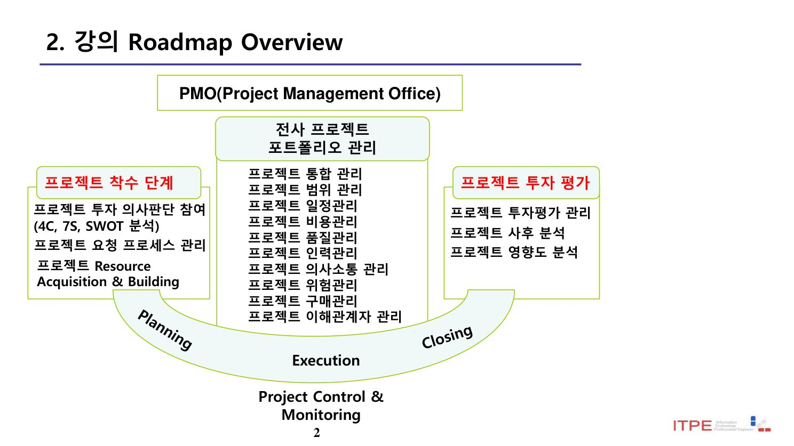
2. 프로젝트 · 프로젝트 관리 정의
프로젝트의 특징 ★
- 한시성(Temporary): 명확한 시작과 끝이 존재
- 유일성(Unique): 고유한 제품·서비스·결과물 산출
- 점진적 상세화(Progressive Elaboration): 진행하면서 구체화
▸ 원본 p.71 내용 복원: 일반적인 프로젝트 관리 프로세스 상호작용
프로세스 그룹과 시간과의 상호관계 정도(사례) 1 프로젝트 착수 단계 주요 마일스톤 기획서 작성 (1.1~3.30) 실행 (2.1~6.30) 초기 데이터 생성 및 검증 (5.1 ~ 8.30)
2014.1.1
2014.3.30
6.30
8.30
10.31
12.27 제품 서비스 및 운영 (10.31) 2차 자동화 프로젝트 진행 (12.27) 프로세스 그룹 기간 중첩 사례 – 착수 프로세스 및 실행 프로세스 중첩
▸ 원본 p.118 표 복원: 프로젝트 관리계획서 개발
| 입력물(Input) | 도구 및 기법(Tool & Technique) | 산출물(Output) |
|---|---|---|
| 프로젝트 헌장(Project Charter) 다른 프로세스 산출물 (Outputs from other processes) 기업환경요인 (Enterprise environmental factors) 조직 프로세스 자산 (Organizational process assets) | 전문가 판단(Expert judgment) 촉진기법(Facilitation technique) | 프로젝트 관리계획서 (Project Management Plan) |
▸ 원본 p.141 내용 복원: 프로젝트 작업 지시 및 관리
프로젝트 관리 계획서(Project Management Plan) 단원 4.2 프로젝트 관리 계획서(Project Management Plan)는 프로젝트를 계획, 실행, 통제 및 감리, 종료하는 방법을 명시한, 여러 개의 보조 관리 계획서를 통합한 프로젝트 관리 계획 문서이며, 범위관리 계획, 요구사항관리 계획, 일정관리 계획, 원가관리 계획, 이해관계자 관리 계획 등을 포함하고 있다. 즉, 작업할 계획서는 입력물이다. 승인된 변경 요청(Approved Change Request) 승인된 변경 요청은 프로젝트의 변경통제위원회(Change Control Board)에 의해 구현을 목적으로 프로젝트 팀에 검토 및 승인되고, 통합 변경 통제 프로세스에 의해 수행된 산출물로서, 시정조치, 예방조치, 결함수정의 변경요청일 수 있다. 승인된 변경 사항은 구현해야 하는 작업이 된다.
▸ 원본 p.151 표 복원: 프로젝트 작업 감시 및 통제
| 입력물(Input) | 도구 및 기법(Tool & Technique) | 산출물(Output) |
|---|---|---|
| 프로젝트 관리 계획서 (Project management Plan) 일정 예측(Schedule Forecasts) 원가 예측(Cost Forecasts) 확인된 변경(Validated changes) 작업 성과 정보★ (Work performance information) EEF OPA | 전문가 판단(Expert judgment) 분석 기법(Analytical techniques) 프로젝트 관리 정보시스템 (Project management information system) 미팅(Meetings) | 변경 요청(Change requests) 작업 성과 보고서★ (Work performance reports) 프로젝트 관리 계획서 갱신 (Project management Plan updates) 프로젝트 문서 갱신(Project documents updates) |
▸ 원본 p.152 표 복원: 프로젝트 작업 감시 및 통제
| ITO | ITO 명 | ITO 정의 및 설명 |
|---|---|---|
| I | 프로젝트 관리 계획서 (Project Management Plan) | 프로젝트 범위관리 계획, 요구사항관리 계획, 일정관리 계획, 원가관리 계획, 이해관계자 관리 계획 등을 바탕으로 통제 기반을 형성 |
| I | 일정 예측 (Schedule Forecasts) | SV(Schedule Variance) 를 통한 일정기준선 대비 진척도를 추정하고, ETC(Estimating To Completion) 계산하여, 프로젝트 완료할 때까지 잔여 예상 원가를 예상. |
| I | 원가 예측(Cost Forecasts) | 완료시점산정치(EAC)와 초기 예산(BAC)의 차이를 비교하여 프로젝트가 허용할 수 있는 한도 내에 있는지, 변경요청을 취해야 하는지 확인. |
| I | 확인된 변경사항 (Validated changes) | 8.3의 확인된 변경이 입력물로 들어옴 변경 사항이 제대로 수행되었는지를 분석하고, 변경이 제대로 수행이 안되어 있으면 다시 변경 요청이 산출물이 된다. |
| I | 작업 성과 정보 (Work performance information) | 통제 프로세스를 통하여, 수집된 데이터를 바탕으로 분석되고 통합된 성과데이터를 말함. |
| I | 기업환경요인(Enterprise environmental factors) | 기업환경요인은 프로젝트 작업 감시 및 통제 프로세스에 영향을 줄 수 있는 기업 환경 요인. |
| I | 조직 프로세스 자산(Organizational process assets) | 프로젝트 작업 감시 및 통제 프로세스에 다음과 같은 영향을 줄 수 있는 목록. |
▸ 원본 p.154 내용 복원: 프로젝트 작업 감시 및 통제
확인된 변경(Validated changes) 확인된 변경사항은 단원 8.3 품질 통제(Control Quality)의 산출물로서, 확인된 변경사항이 제대로 수행되었는지를 확인하는 입력물이며, 승인된 변경이 제대로 수행되었는가를 판단하기 위한 데이터가 입력물로서 제공된다. • 이해관계자의 확인된 변경 요청 프로젝트 적용 및 수행 • 해당 변경이 적절하게 적용되었는지 확인 수행 완료 판단 확인(Validation)
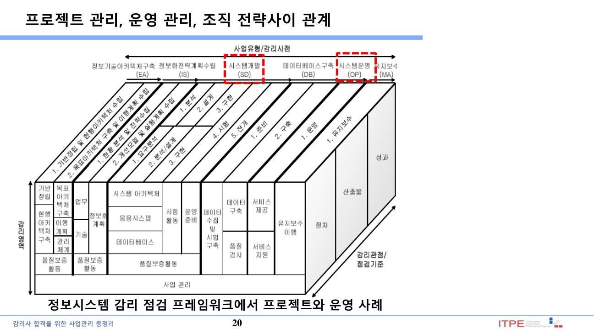
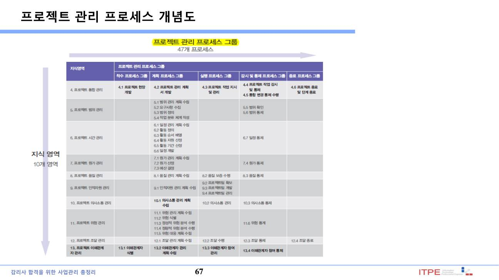
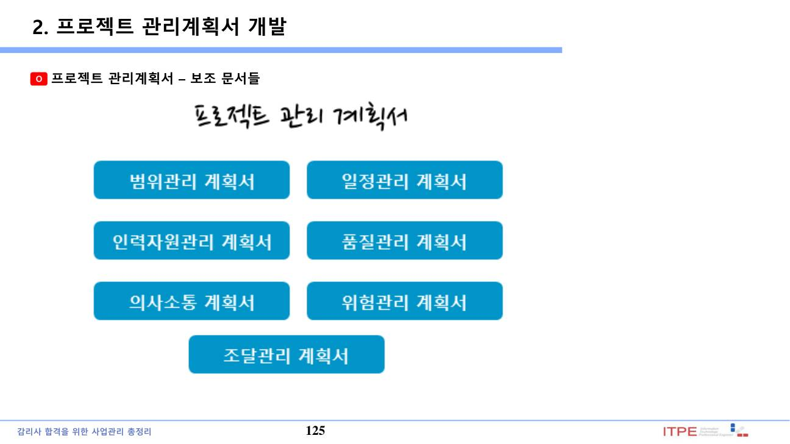
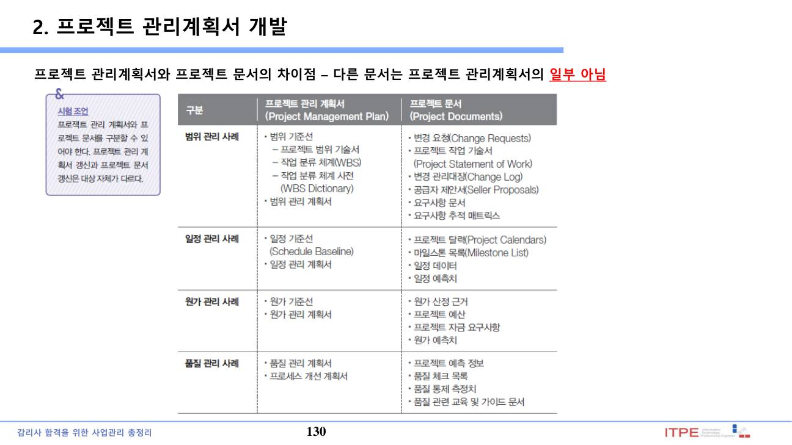
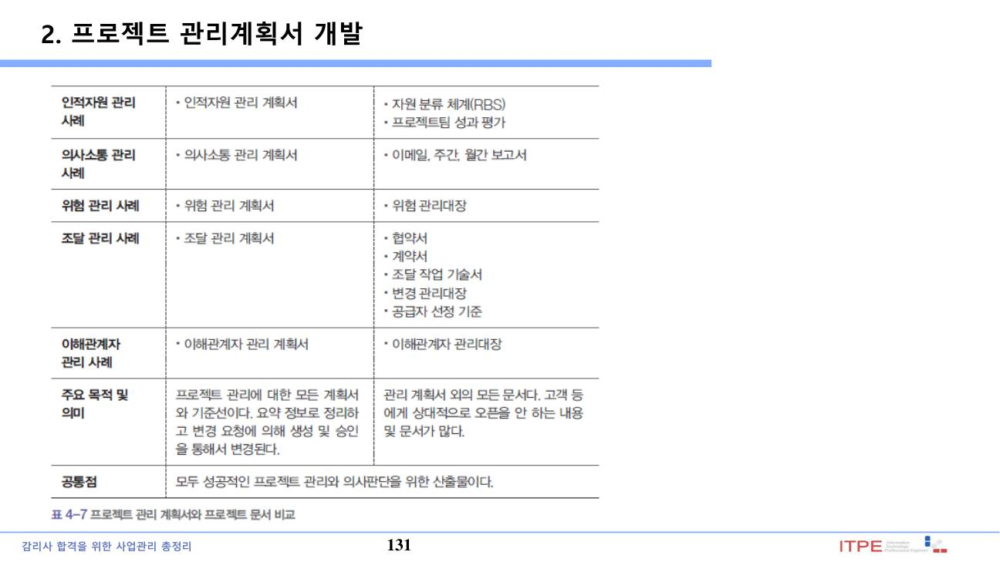
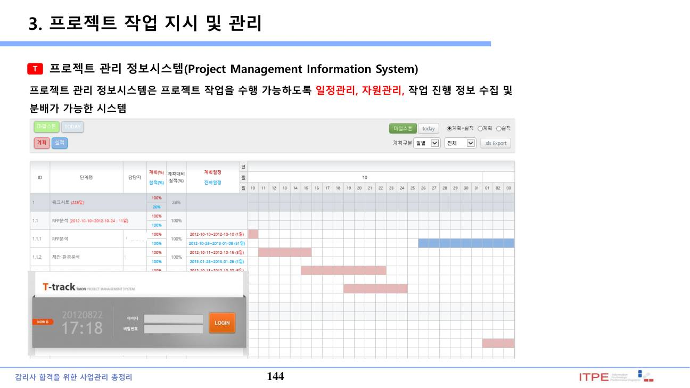
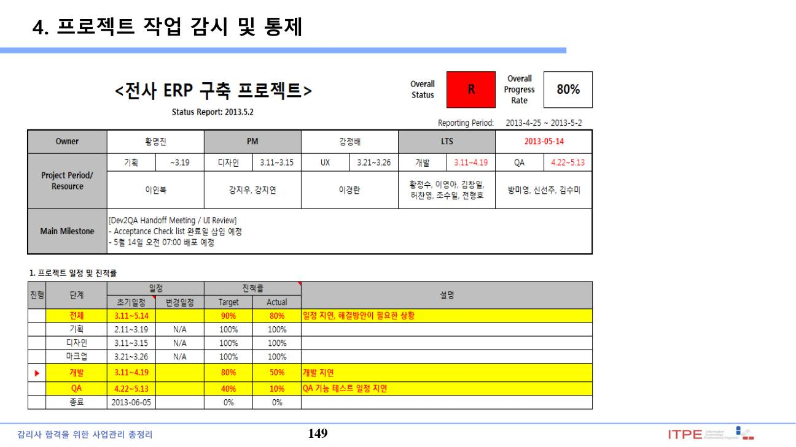
3. 프로젝트 · 프로그램 · 포트폴리오
조직은 전략 목표를 달성하기 위해 개별 프로젝트를 관련성에 따라 프로그램으로 묶고, 이를 다시 포트폴리오로 통합하여 관리한다. 세 개념은 관리 수준·목적·책임 범위가 다르다.
| 구분 | 정의·관리 관점 |
|---|---|
| 프로젝트 | 목표에 의해 정의되는 한시적 활동. PM은 목표 달성까지 팀 관리 |
| 프로그램 | 상호 관련된 프로젝트 집합. 개별 관리로 얻기 어려운 이익(benefit)을 위해 통합 관리 |
| 포트폴리오 | 전략 목표 달성을 위한 프로젝트·프로그램의 집합(상호 관련 없어도 됨). 전사 관점의 우선순위·투자 관리 |
▸ 원본 p.26 내용 복원: 다음 중 프로그램과 포트폴리오 관리에 대한 설명으로 틀린 것은?
① 포트폴리오 관리는 전략적인 기업의 목표들을 달성하기 위한 그룹으로서 관리되는, 프로젝트들, 서브포트폴리오, 운영 관리들을 말한다.
② 프로그램은 프로젝트보다 상대적으로 더욱 중요한 이익 및 큰 범위를 가진다.
③ 프로그램 관리는 개별적인 프로그램 관리를 통해 유용하기보다는, 이익을 얻기 위한 통제를 통해 프로그램 요구사항을 맞추기 위해, 지식, 기술, 도구 및 기법를 적용한다.
④ 기업의 PMO 조직 사이즈 측면에서 보면, 프로젝트 < 포트폴리오 < 프로그램 순으로 크다.
4. PM 역할 · 역량 · 비즈니스 가치
PMI 인재 삼각형(Talent Triangle)
| 역량 | 내용 |
|---|---|
| 기술적 PM(Technical) | 일정·원가·위험 등 프로젝트 관리 지식·기법 적용 |
| 리더십(Leadership) | 팀 동기부여·협상·갈등해결 등 대인관계 역량 |
| 전략·비즈니스 경영(Strategic & Business) | 조직 전략·비즈니스 가치와 프로젝트 연계 |
비즈니스 가치: 프로젝트가 조직에 제공하는 유·무형의 가치(수익, 시장점유율, 브랜드, 전략 목표 기여 등)로, 프로젝트 정당성의 근거가 된다.
5. 조직구조 유형 ★★★
조직구조에 따라 PM의 권한·자원 가용성·예산 통제권이 달라진다.
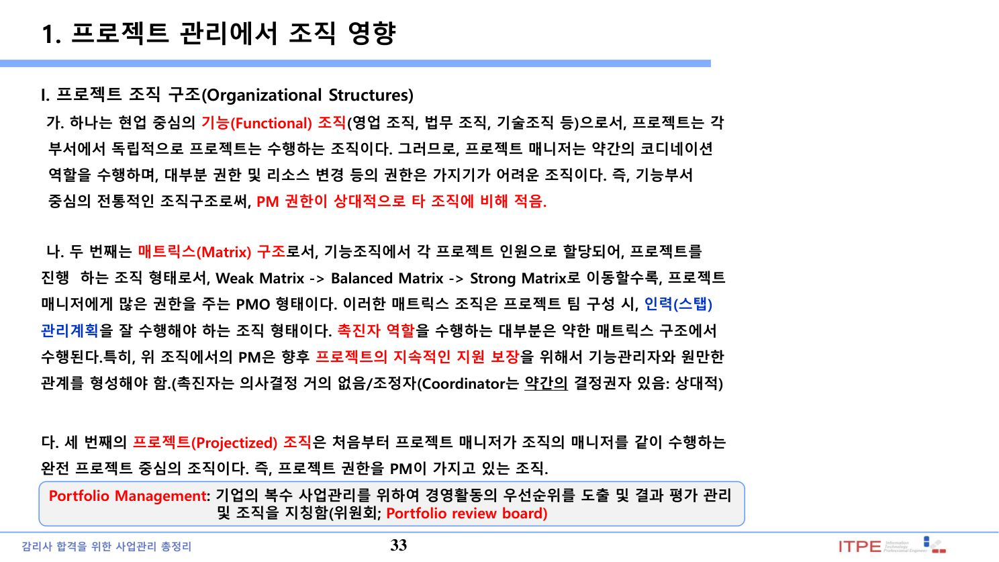
| 조직구조 | PM 권한 | 자원 가용성 | PM 역할 |
|---|---|---|---|
| 기능(Functional) | 거의 없음~적음 | 적음 | Part-time(조정자) |
| 약한 매트릭스 | 적음 | 적음 | Part-time(조정자/촉진자) |
| 균형 매트릭스 | 중간 | 중간 | Full-time |
| 강한 매트릭스 | 중간~높음 | 중간~높음 | Full-time |
| 프로젝트화(Projectized) | 높음~전권 | 높음 | Full-time(전담) |
- 프로젝트 촉진자(Project Expeditor): 의사결정 권한 없음, 참모·연락 역할(스태프)
- 프로젝트 조정자(Project Coordinator): 일부 의사결정 권한 보유, 상위 경영진에 보고
6. 프로젝트 생명주기
프로젝트 생명주기(Life Cycle)는 프로젝트가 시작부터 종료까지 거치는 단계(Phase)의 연속이다. 요구의 명확성·변경 빈도에 따라 예측형~적응형 중 적합한 유형을 선택한다.
| 유형 | 특징 |
|---|---|
| 예측형(Predictive, Waterfall) | 범위·일정·원가를 초기에 확정. 요구가 명확할 때 적합 |
| 반복형(Iterative) | 반복을 통해 산출물을 정제. 범위는 대체로 고정 |
| 점증형(Incremental) | 기능을 부분씩 인도하여 완성 |
| 적응형(Adaptive, Agile) | 짧은 반복(스프린트)으로 변화에 신속 대응. 요구 불확실성이 클 때 |
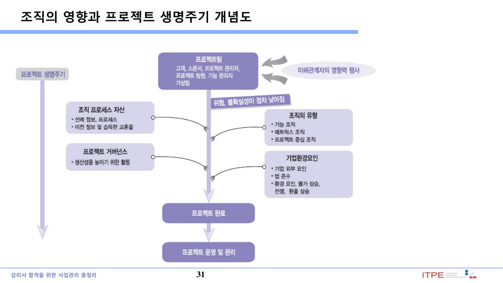
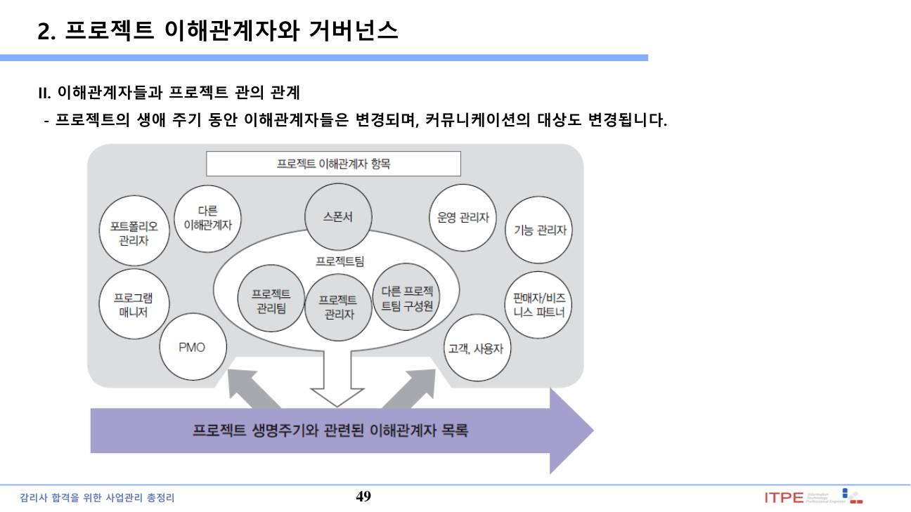
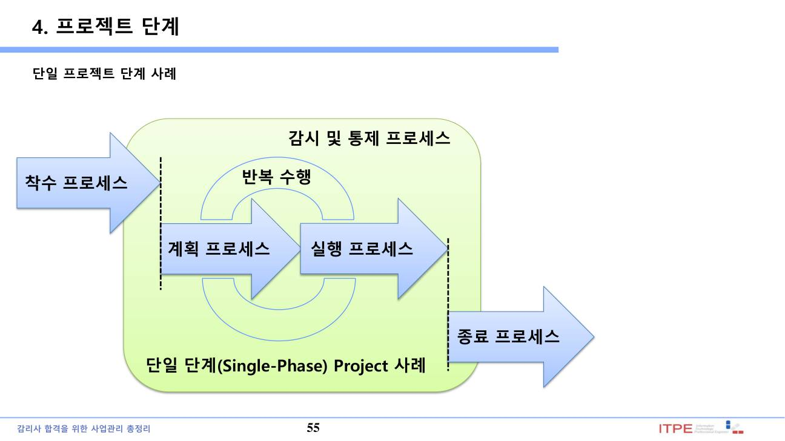
7. PMO(Project Management Office) 유형
PMO(Project Management Office)는 프로젝트 관리를 표준화하고 자원·방법론·도구·교훈을 공유하는 조직 단위다. 프로젝트에 대한 통제 수준에 따라 세 유형으로 나뉜다.
| 유형 | 통제 수준·역할 |
|---|---|
| 지원형(Supportive) | 템플릿·교훈·교육 등 지원(통제 낮음) |
| 통제형(Controlling) | 방법론·표준 준수 요구(통제 중간) |
| 지시형(Directive) | PMO가 직접 프로젝트를 관리(통제 높음) |
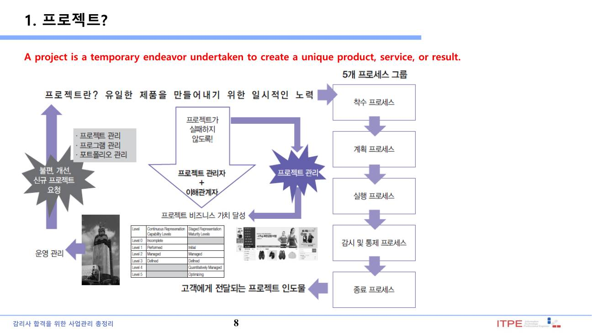
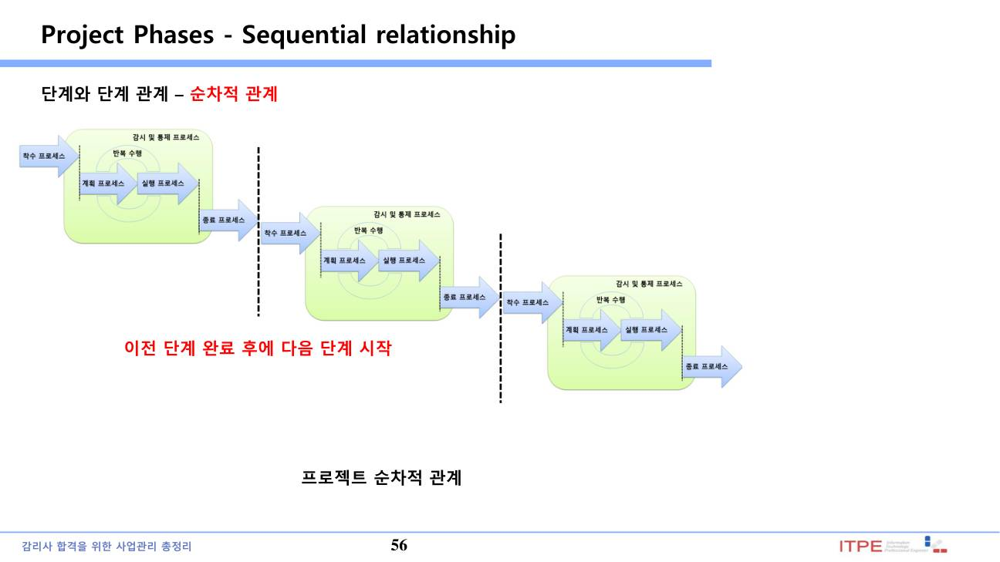
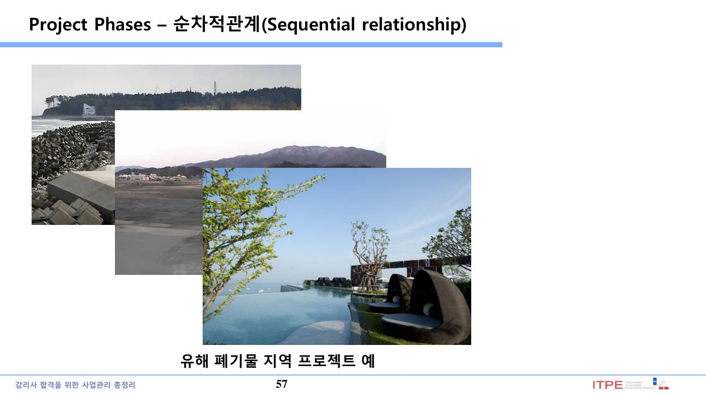
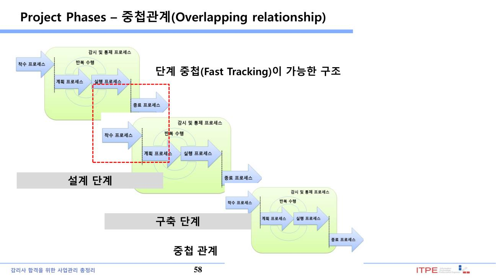
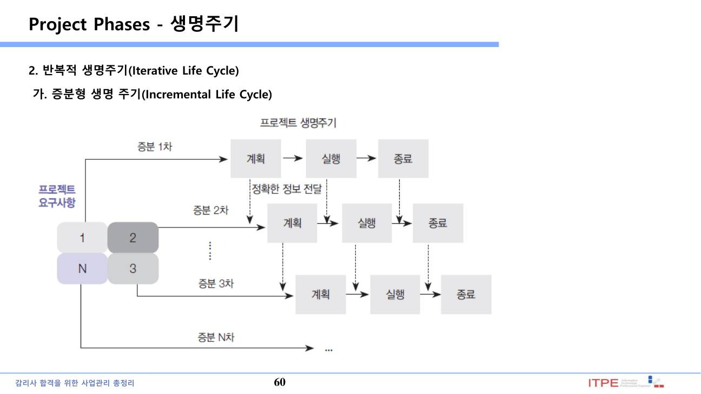
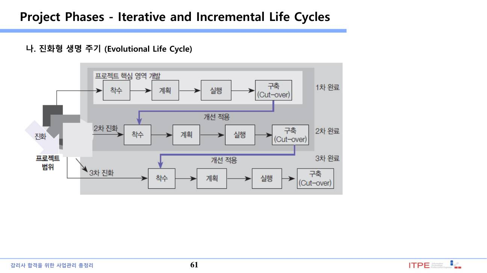
8. 5개 프로세스 그룹 · 10 지식영역 · 49 프로세스 ★★★
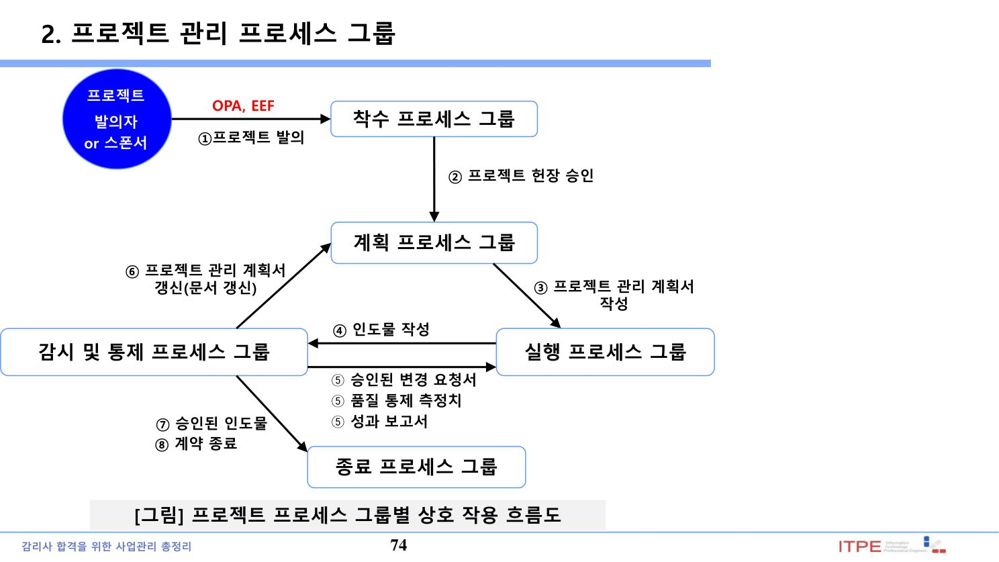
| 프로세스 그룹 | 내용 |
|---|---|
| 착수(Initiating) | 프로젝트/단계 승인 – 프로젝트 헌장 개발, 이해관계자 식별 |
| 계획(Planning) | 범위·일정·원가·품질·자원·위험 등 계획 수립(가장 많은 프로세스) |
| 실행(Executing) | 계획대로 작업 수행 – 자원·비용 소모가 가장 큼 |
| 감시·통제(Monitoring & Controlling) | 성과 측정·변경 통제(범위·일정·원가·품질 통제, 통합변경통제) |
| 종료(Closing) | 프로젝트/단계 공식 종료, 교훈 정리, 계약 종료 |
이 프로세스들은 10개 지식영역(통합·범위·일정·원가·품질·자원·의사소통·위험·조달·이해관계자)에 걸쳐 49개 프로세스(PMBOK 6판)로 매핑된다. (PMBOK 5판은 47개)
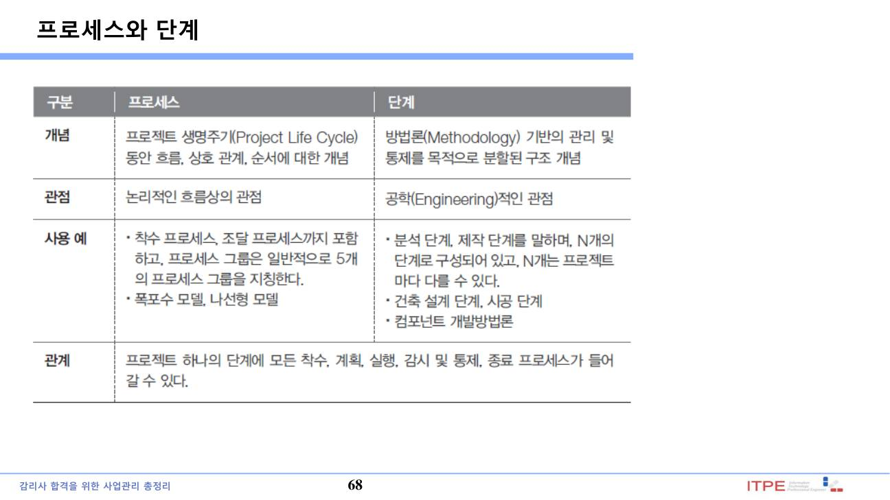
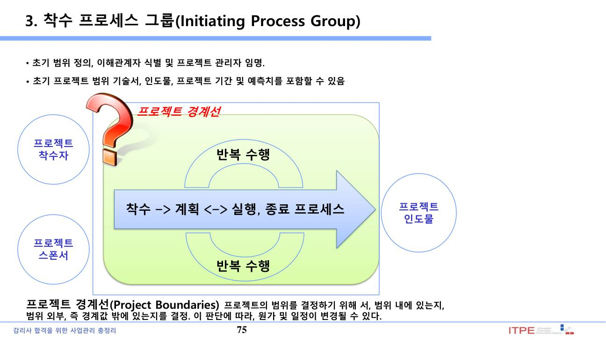
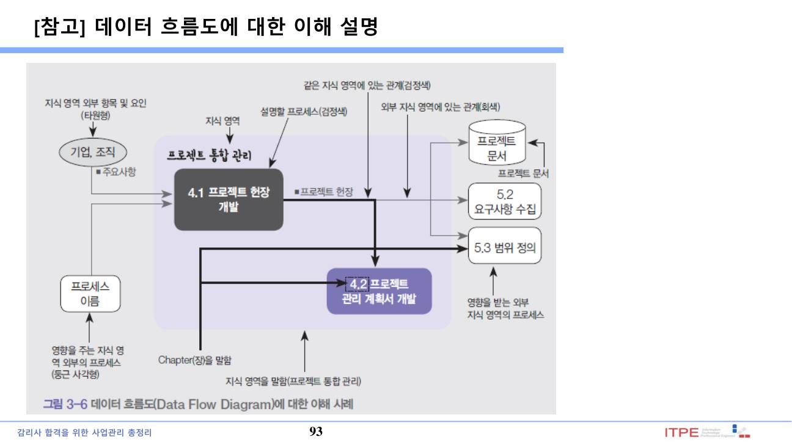
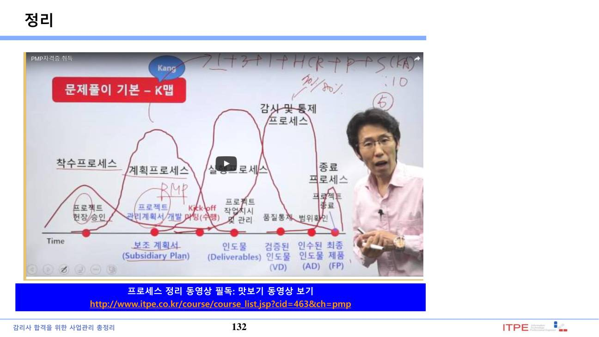
9. 프로젝트 통합관리 – 7개 프로세스 ★★★
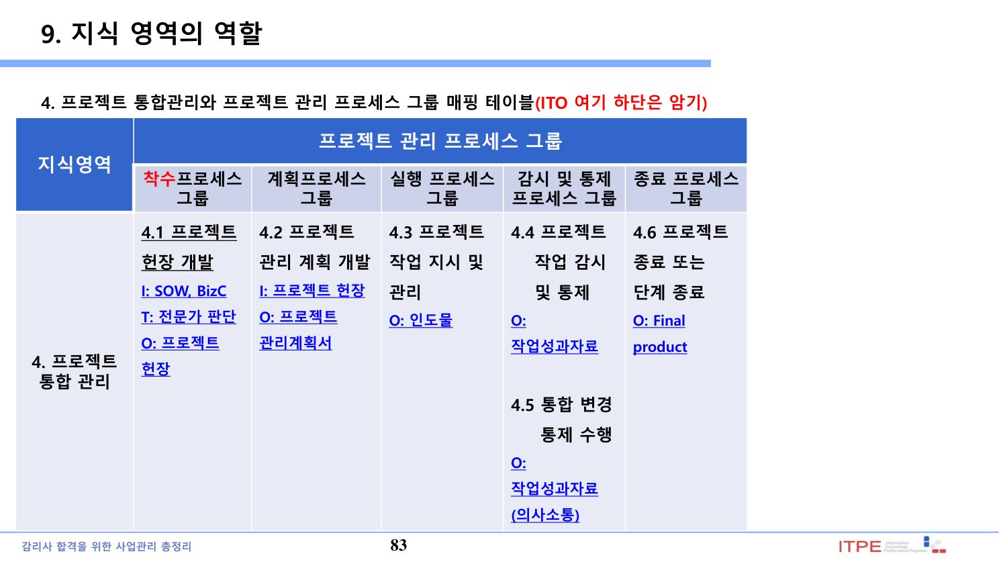
| 번호 | 프로세스 | 내용 | 그룹 |
|---|---|---|---|
| 4.1 | 프로젝트 헌장 개발 | 프로젝트를 공식 승인, PM에게 권한 부여. 산출물=프로젝트 헌장 | 착수 |
| 4.2 | 프로젝트관리 계획서 개발 | 모든 보조 계획을 통합한 프로젝트관리 계획서 작성 | 계획 |
| 4.3 | 프로젝트 작업 지시 및 관리 | 계획에 따라 작업 수행, 인도물 산출 | 실행 |
| 4.4 | 프로젝트 지식관리 | 기존/신규 지식 활용·축적(교훈 관리대장) — PMBOK 6에서 신설 | 실행 |
| 4.5 | 프로젝트 작업 감시 및 통제 | 성과 추적·검토·보고, 시정/예방 조치 권고 | 감시·통제 |
| 4.6 | 통합 변경통제 수행 | 모든 변경요청 검토·승인/기각(CCB), 형상 관리 | 감시·통제 |
| 4.7 | 프로젝트 또는 단계 종료 | 공식 종료, 최종 인도물 이관, 교훈 정리 | 종료 |
▸ 원본 p.100 표 복원: 프로젝트 헌장 개발
| 입력물(Input) | 도구 및 기법(Tool & Technique) | 산출물(Output) |
|---|---|---|
| 프로젝트 작업 기술서 (Project Statement of Work) 비즈니스 케이스 (Business Case) 협약서(Agreements) 기업환경요인 (Enterprise Environmental Factors) Reminde 조직 프로세스 자산 (Organizational Process Assets) | 전문가 판단(Expert judgment) 촉진기법(Facilitation technique) r! | 프로젝트 헌장(Project Charter) |
▸ 원본 p.137 표 복원: 프로젝트 작업 지시 및 관리
| 입력물(Input) | 도구 및 기법(Tool & Technique) | 산출물(Output) |
|---|---|---|
| 프로젝트 관리 계획서 (Project management Plan) 승인된 변경 요청* (Approved change request) 기업환경요인(EEF) 조직 프로세스 자산(Organizatio nal process assets) | 전문가 판단(Expert judgment) 프로젝트 관리 정보시스템 (Project management information system) 미팅(Meetings) | 인도물(Deliverables) ** 작업 성과 자료 (Work Performance Data) 변경 요청(Change requests) 프로젝트 관리 계획서 갱신 (Project management Plan updates) 프로젝트 문서 갱신 (Project documents updates) |
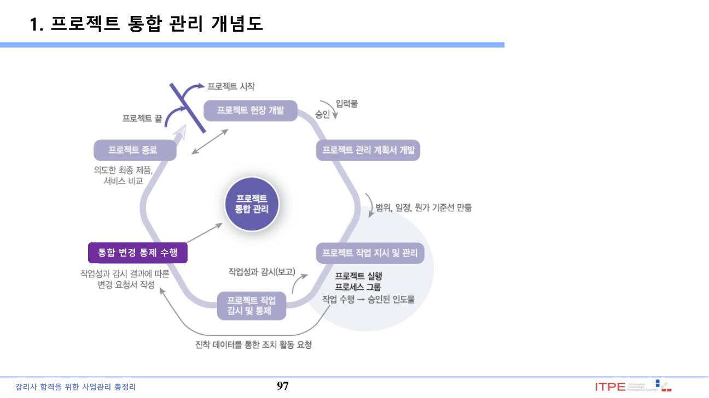
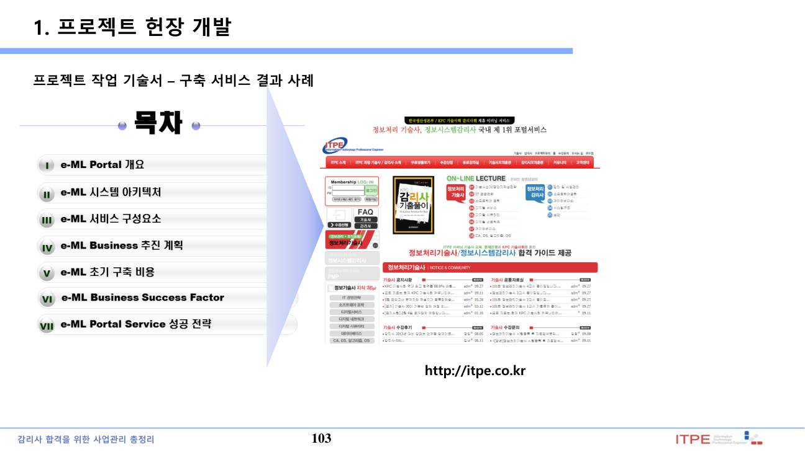
10. 통합 변경통제 · 형상관리 · 교훈
통합 변경통제(4.6) ★★
모든 변경요청은 통합 변경통제 수행 프로세스를 거쳐 검토·승인/기각된다. 승인 주체는 CCB(Change Control Board, 변경통제위원회)이며, 승인된 변경만 기준선(Baseline)에 반영된다.
| 구분 | 내용 |
|---|---|
| 변경요청 유형 | 시정조치(Corrective) · 예방조치(Preventive) · 결함수정(Defect repair) · 갱신(Update) |
| 형상관리(Configuration) | 인도물·산출물의 버전·변경 이력을 체계적으로 통제(형상 식별·통제·상태보고·감사) |
교훈(Lessons Learned)
프로젝트 수행 중 얻은 성공·실패 경험을 교훈 관리대장(Lessons Learned Register)에 기록하고, 종료 시 교훈 저장소(Repository)에 이관하여 조직 프로세스 자산(OPA)으로 축적한다.
▸ 원본 p.163 표 복원: 통합 변경 통제 수행
| 입력물(Input) | 도구 및 기법(Tool & Technique) | 산출물(Output) |
|---|---|---|
| 프로젝트 관리 계획서 (Project management Plan) 작업 성과 보고서 (Work performance reports) 변경 요청서(Change Request) 기업환경요인 (Enterprise Environmental Factors) 조직 프로세스 자산 (Organizational process assets) | 전문가 판단(Expert judgment) 미팅(Meetings) 변경통제도구 (Change Control Tools) | 승인된 변경 요청서 (Approved change requests) 변경 관리대장(Change log) 프로젝트 관리 계획서 갱신 (Project management Plan updates) 프로젝트 문서 갱신 (Project documents updates) |
▸ 원본 p.167 내용 복원: 프로젝트 종료 or 단계 종료
프로젝트 종료 및 단계 종료 - 프로젝트 종료 및 단계 종료는 프로젝트의 모든 활동들을 마무리하는 단계로서, 다음과 같은 입력물, 도구 및 기법, 산출물. - 프로젝트 시작에 대한 Sign-off를 상위 Sponsor가 했듯이, 프로젝트 종료 시에 sign off 하는 사람도 역시 Sponsor가 담당. Close Project or Phase is the process of finalizing all activities across of the project management process groups to formally complete the project or phase. 프로젝트 종료 혹은 단계 종료는 모든 프로젝트 관리 프로세스 그룹 활동들을 공식적으로 끝내고, 종결하는 프로세스이다.
▸ 원본 p.170 표 복원: 프로젝트 종료 or 단계 종료
| 입력물(Input) | 도구 및 기법(Tool & Technique) | ★★산출물(Output) |
|---|---|---|
| 프로젝트 관리 계획서(Project m anagement Plan) 수용된 인도물 (Accepted Deliverables) 조직 프로세스 자산(Organizatio nal process assets) | 전문가 판단(Expert judgment) 분석적 기술 (Analytical techniques) 미팅(Meetings) | 최종 제품, 서비스, 결과 이전 (Final product, service, or result transition) 조직 프로세스 자산 갱신 (Organizational process assets update) |
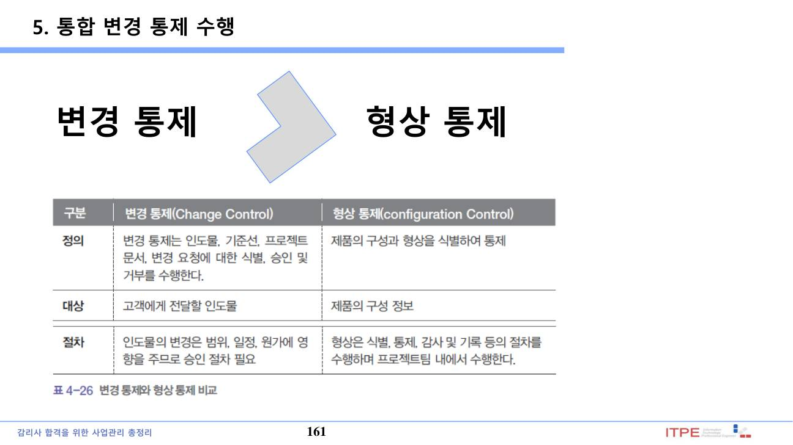
📚 전체 기출·예상문제 (14문항) — 원문 수록
본 강좌 원본 PDF에 수록된 기출·예상문제를 빠짐없이 원문 그대로 정리했습니다. 정답·해설은 강의 원문 기준입니다.